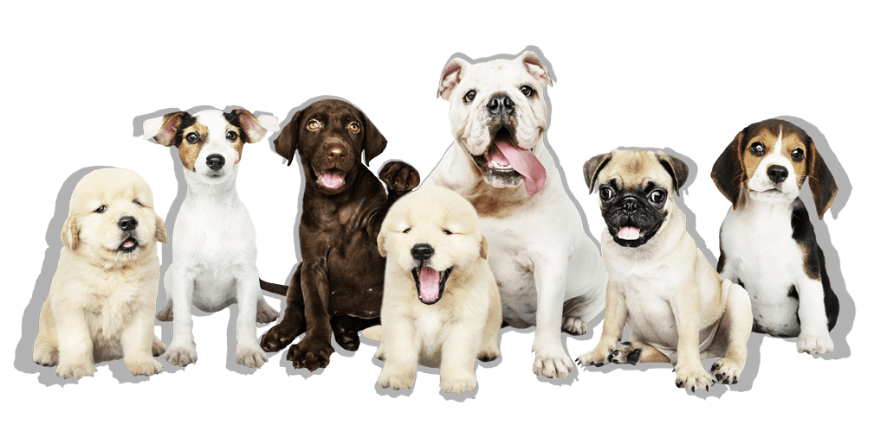

Patas Aumigas

Algumas raças e suas principais características:
Husky
Olhos Expressivos:
Os Huskies têm olhos amendoados e expressivos, frequentemente em tons de azul,
castanho ou heterocromáticos (um olho de cada cor).
Dachshund
Corpo pequeno:
Corpo longo e baixo, muitas vezes referido como "cão salsicha" devido à sua forma.
Dalmata
Pelagem com manchas:
Sua pelagem distintiva, que é branca com manchas pretas ou marrons.
Dobermann
Aparência:
Eles têm uma pelagem curta e densa que geralmente é preta com marcações avermelhadas
na parte inferior do corpo, nas patas, no peito, no rosto e sobre os olhos.